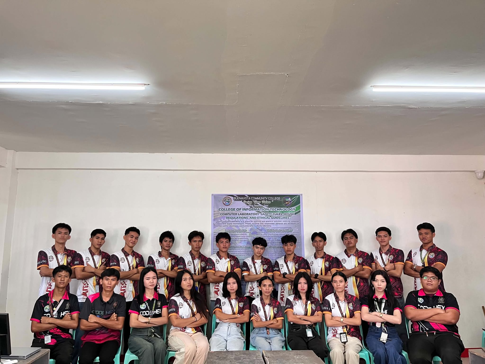
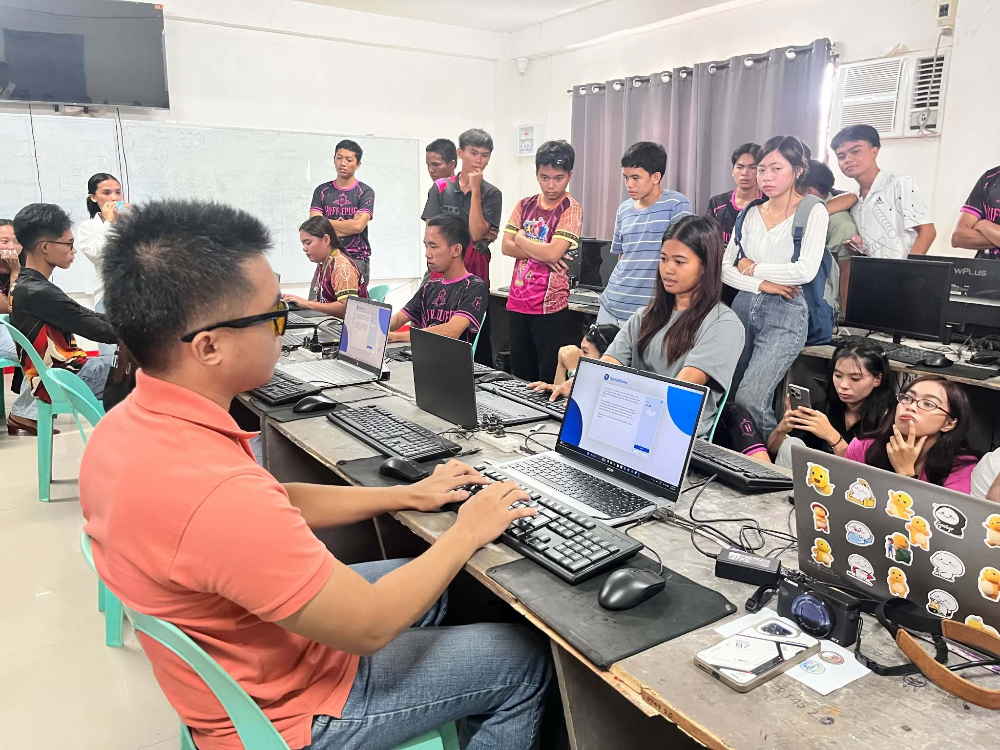
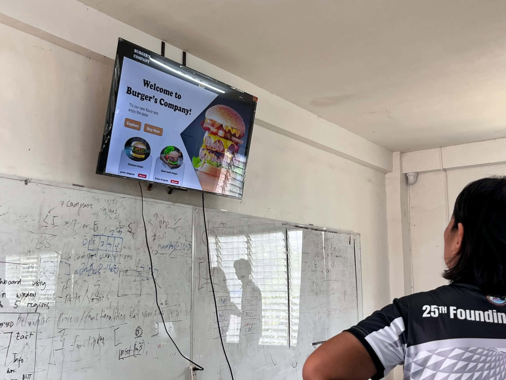
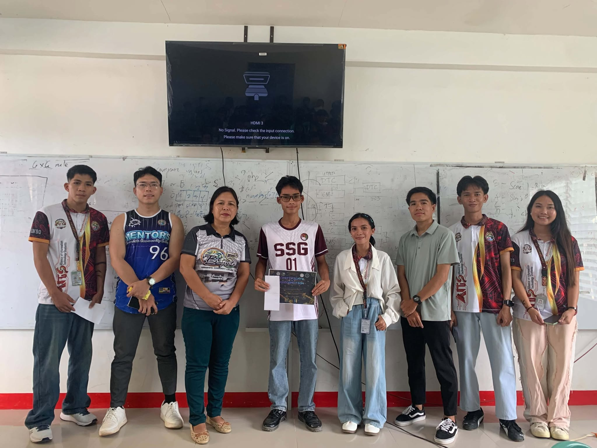
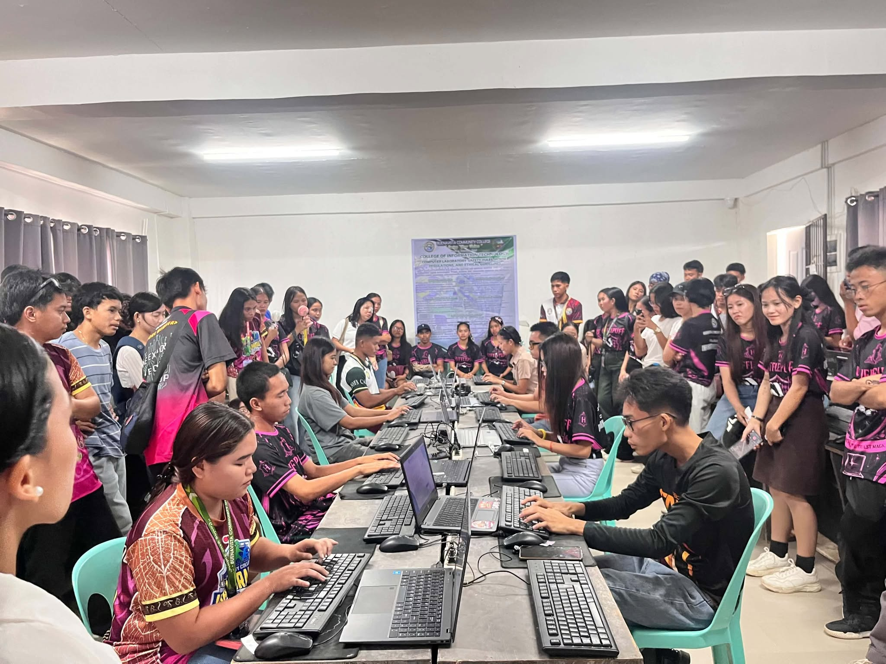

3rd Year BSIT Student — Buenavista Community College
Aspiring IT professional passionate about technology, programming, problem-solving, and continuous learning.
I’m building my foundation in IT, one project at a time.
I am a 3rd-year BSIT student at Buenavista Community College, fascinated by how software and systems work together — from the logic behind a program to the hardware that supports it.
I’m especially interested in programming, software development, and problem solving, and I see every class project and competition as an opportunity to strengthen my foundation and expand my skills.
Beyond academics, I take on leadership and responsibility as Auditor of the Alliance of Information Technology Students (AITS), while continuing to seek opportunities to learn, grow, and contribute in the IT field.
Academic background
Bachelor of Science in Information Technology
Buenavista Community CollegeSenior High School - Vocational Courses
Bohol College of Science and Technology Inc. - Main CampusWhat I'm building on
I’m growing my technical skills through my BSIT journey, learning the fundamentals and improving as I apply them in practice.
Programming
Web Development
Computer & IT
Organizational involvement

Alliance of Information Technology Students (AITS)
Buenavista Community College
A milestone worth highlighting
CodeHEX Computer Programming Competition
I was recognized for top performance in a Java programming competition, reflecting my growing expertise in Java development, problem-solving, and algorithmic thinking.
Selected work

PalayPlan Mobile
PalayPlan is a smart mobile app designed to help rice farmers plan schedules, monitor crop conditions, and simplify farm decision-making through a simple digital interface.
View ProjectEventix
A mobile-first single-page web app for BCC school event discovery, organization management, ticket booking, and digital pass verification.
View ProjectAlong the way
BSIT Coursework
Ongoing coursework at Buenavista Community College covering programming, IT fundamentals, and applied projects.
AITS Membership — Auditor
Active member of the Alliance of Information Technology Students, currently serving as Auditor.
CodeHEX Computer Programming Competition — Champion
Won the championship in a computer programming competition, applying programming and problem-solving skills under contest conditions.
Recognition
Tap a certificate to view it in detail.
How it's progressing
Learning
Building the fundamentals
Practicing
Writing code regularly
Building
Making real projects
Competing
Testing skills under pressure
Improving
Refining, one iteration at a time
Looking back so far
Every error message taught me something I couldn't have learned from a lecture alone.
Studying BSIT has been a steady process of trial, error, and small breakthroughs. Programming challenges that once felt overwhelming became manageable once I learned to break them into smaller pieces — a habit that now shapes how I approach most problems, technical or otherwise.
Competing in CodeHEX pushed me to apply what I'd learned under real pressure, and it reinforced how much continuous learning matters in this field — there is always another concept, tool, or approach worth picking up.
Serving as Auditor for AITS has also shaped my growth outside the classroom, building a sense of responsibility, accountability, and teamwork that I expect to carry into my future work as an IT professional.
Where this is headed
Become a skilled IT professional
Build a well-rounded foundation across programming and IT practice.
Improve programming abilities
Keep strengthening core logic, debugging, and coding practice.
Build real-world applications
Turn coursework knowledge into working, usable software.
Develop technical expertise
Go deeper into the tools and technologies that matter most.
Continue professional growth
Keep learning past graduation — this field never stops moving.
Contribute to the tech field
Put these skills toward work that has a real, useful impact.
Moments & milestones




Downloadable CV
Save a copy of this résumé
Opens your browser's print dialog — choose "Save as PDF" as the destination to download it.
Adrian Gollegos Banquil
3rd Year BSIT Student — Buenavista Community CollegeEDUCATION
- Bachelor of Science in Information Technology — Buenavista Community College (3rd Year, in progress)
- Senior High School Vocational Courses — Bohol College of Science and Technology Inc., Main Campus: Grade 11 - Electrical and Driving; Grade 12 - SMAW Welding and Driving NC II
TECHNICAL SKILLS
- Programming Fundamentals, Problem Solving, Algorithmic Thinking, Debugging
- HTML, CSS, JavaScript, Bootstrap 5, Flutter, Dart
- Computer Fundamentals, Software & Hardware Knowledge, Productivity Tools, Basic Troubleshooting
ORGANIZATION & LEADERSHIP
- Alliance of Information Technology Students (AITS) — Auditor
ACHIEVEMENTS
- Champion — CodeHEX Computer Programming Competition
PROJECTS
- PalayPlan Mobile — Flutter mobile app for rice-farm planning, crop monitoring, and farm decision-making
ACTIVITIES
- BSIT Coursework, AITS Membership, CodeHEX Competition